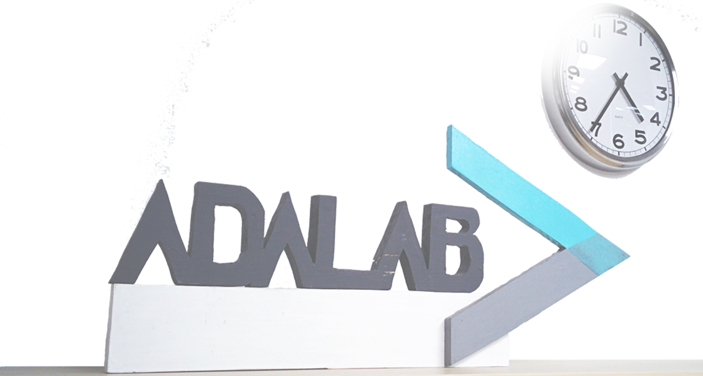

MI HISTORIA
Todo comenzó en Madrid, allá por 2008. Mi primer contacto fue con el diseño digital.
A mis 16 años, me encontraba todas las tardes creando diseños con Photoshop
para poder decorar mi perfil en un foro de internet.
Cuando cumplí los 18, con los estudios acabados y con la mudanza a Cuenca,
mi curiosidad ya no solo se extendía a intentar crear los mejores diseños con Photoshop,
sino que, al crear mi primer blog, esa curiosidadse expandía hacia la maquetación.
Pero a falta de más información y con mas opciones conocidas sobre la mesa,
lo dejé de lado, regresé a Madrid y me centré en el bachiller de artes.
Esa época no duró mucho. Un mal momento me hizo dejar el bachiller y
regresé a casa de mis padres.
Tuve un paron en mi vida importante en el que no pude hacer mas que cursos
gratis online y me diplomé en Estética.
A la edad de 23 años y con la situación ecómica más estable, decidí volver
a Madrid, independizarme definitivamente y hacer un FP de Peluquería.
Pude desarrollar muchas habilidades como el Marketing, la Fotografía,
exponer en público...
Pero al no encontrar trabajo decidí investigar otros sectores.
Durante años estuve en contacto indirecto con el sector
tecnológico y aunque el miedo, el desconocimiento y la juventud me hicieron
dejar de lado la informatica, decidí apartar todas aquellas barreras que yo misma me estaba poniendo
y con ayuda y apoyo de mi pareja (ingeniero informático), me puse a aprender
JavaScript. Él me dio la posibilidad de formarme más rápidamente con un curso
intenso como Adalab Digital, y la verdad es no necesitaba pensarlo. Lo tenía claro.
Necesitaba empezar cuanto antes.
Después de 4 intesos meses lo conseguí. Aquí estoy, siendo desarrolladora web Junior.
Aun queda mucho camino por delante. Muchas cosas que aprender pero sin duda, ganas no me han
faltado. Me gustaría conseguir pronto mi primera experiencia remunerada como desarrolladora front-end, aunque
sigo haciendo proyectos para aprender por mi cuenta.
Poco a poco mi camino se construye.
